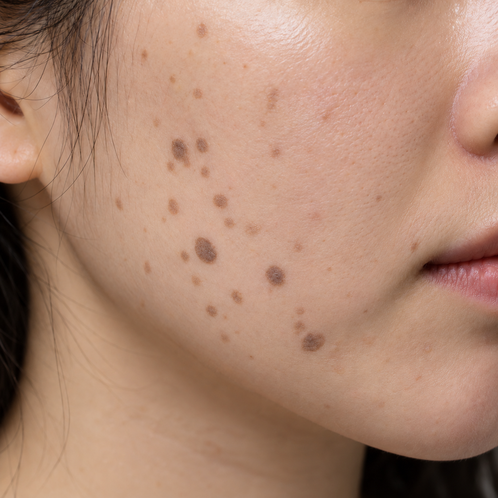

강남후한의원 칼럼｜편평사마귀 색깔로 보는 진행 단계
편평사마귀가 있는 분들이 거울을 보다가 이런 생각을 하실 때가 있습니다.
“예전에는 거의 피부색이었는데 요즘 조금씩 갈색으로 변하는 것 같아요.”
“편평사마귀 색깔이 어두워졌는데 혹시 더 심해지고 있는 걸까요?”
편평사마귀는 처음부터 진한 갈색으로 나타나는 것이 아니라 시간이 지나면서 색깔과 형태가 조금씩 달라질 수 있습니다.
강남후한의원 칼럼에서는 오늘 편평사마귀의 색깔 변화에 따라 어떤 상태를 살펴볼 수 있는지 단계별로 설명해드리겠습니다.
1단계｜주변 피부와 비슷한 옅은 살색
편평사마귀 초기에는 주변 피부색과 거의 비슷하거나 조금 옅은 살색으로 보이는 경우가 많습니다.
색 자체가 뚜렷하지 않기 때문에 거울을 가까이에서 자세히 보지 않으면 편평사마귀가 있다는 사실을 알아차리기 어려울 수도 있습니다.
이 단계에서는 색보다는 피부 표면이 살짝 올라와 있는 듯한 미세한 융기 때문에 병변이 눈에 띄는 경우가 있습니다.
특히 얼굴이나 목처럼 평소 자주 보는 부위에 생겼더라도 초기에는 좁쌀이나 작은 피부 트러블처럼 생각하고 지나치는 경우도 있습니다.
강남후한의원 칼럼에서 편평사마귀를 살펴볼 때도 단순히 색깔만 보는 것이 아니라 표면의 융기와 병변의 개수, 발생 범위 등을 함께 살펴보는 것이 중요합니다.
2단계｜옅은 갈색으로 보이기 시작하는 시기
시간이 지나면서 편평사마귀가 옅은 갈색을 띠기 시작할 수 있습니다.
처음에는 피부색과 비슷해 잘 보이지 않았던 병변도 색이 조금씩 진해지면서 주변 피부와 경계가 구분되기 시작합니다.
크기는 여전히 작게 보일 수 있지만 색깔 차이가 생기면서 환자분들이 “갑자기 눈에 띄기 시작했다”고 느끼는 시기이기도 합니다.
실제로 편평사마귀가 갑자기 생긴 것이 아니라 기존에 있던 작은 병변이 색깔 변화로 인해 더 잘 보이게 되었을 가능성도 있습니다.
3단계｜진한 갈색 또는 회갈색
편평사마귀를 오랫동안 그대로 두었을 때는 병변의 색깔이 이전보다 진한 갈색이나 회갈색으로 보일 수 있습니다.
색이 진해지면 작은 병변도 상대적으로 눈에 잘 띄게 됩니다.
또한 병변에 따라서는 초기보다 크기가 커지거나 주변에 비슷한 병변이 함께 보이는 경우도 있습니다.
이 시기가 되면 얼굴이나 목에 있는 편평사마귀가 화장으로 잘 가려지지 않거나 사진을 찍었을 때 눈에 띄어 치료를 고민하시는 분들이 많아집니다.
강남후한의원 칼럼을 보고 내원을 고려하고 계신다면 색깔 하나만으로 상태를 판단하기보다는 현재 병변의 형태와 범위를 함께 확인하는 것이 좋습니다.
4단계｜검은색에 가까운 짙은 색

오랜 기간 지속된 일부 편평사마귀는 갈색보다 더욱 짙어져 검은색에 가까운 색으로 보일 수 있습니다.
색소 침착이 두드러지면 편평사마귀가 주변 피부와 확연히 구분되고 여러 병변이 가까운 위치에 있는 경우에는 하나의 넓은 병변처럼 보이기도 합니다.
또한 개별 병변의 크기와 모양에도 차이가 있을 수 있기 때문에 단순히 색이 진하다는 이유만으로 편평사마귀의 진행 정도를 단정하기보다는 직접 피부 상태를 확인하는 과정이 필요합니다.
편평사마귀 색깔은 왜 점점 달라질까요?
편평사마귀의 색이 달라져 보이는 데에는 피부의 색소 변화가 영향을 줄 수 있습니다.
병변이 있는 부위에 멜라닌 색소가 축적되면서 처음에는 살색이었던 부분이 옅은 갈색이나 진한 갈색으로 보일 수 있습니다.
하지만 편평사마귀의 색깔이 진해졌다는 사실만으로 반드시 상태가 급격하게 악화되었다고 판단할 수는 없습니다.
피부의 자극 정도나 염증 반응, 개인의 피부색, 자외선 노출 등 여러 요인이 색 변화에 영향을 줄 수 있기 때문입니다.
색깔이 진하면 오래된 편평사마귀일까요?
일반적으로 오래 지속된 병변에서 색이 더 진하게 보이는 경우가 있을 수 있습니다.
반대로 비교적 최근에 생긴 편평사마귀는 주변 피부와 비슷한 색을 띠어 눈에 잘 띄지 않는 경우도 있습니다.
다만 편평사마귀의 발생 시기나 치료 난이도를 색깔만으로 정확하게 구분할 수 있는 것은 아닙니다.
강남후한의원 칼럼에서도 편평사마귀를 볼 때 병변의 색깔뿐만 아니라 크기, 개수, 발생 부위와 피부 상태를 함께 살펴보는 것이 중요하다고 말씀드립니다.
색이 진해졌다고 무조건 악화된 것은 아닙니다
편평사마귀가 옅은 살색에서 갈색이나 진한 갈색으로 변하면 많은 분들이 병변이 갑자기 심해졌다고 걱정하십니다.
하지만 색깔 변화만으로 편평사마귀의 악화 여부를 단정하기는 어렵습니다.
피부 상태나 반복적인 자극, 자외선 노출 등에 따라서도 병변의 색깔이 이전보다 짙게 보일 수 있습니다.
따라서 색이 변했다면 스스로 상태를 판단하기보다는 병변의 수나 크기에도 변화가 있는지를 함께 확인하는 것이 좋습니다.
편평사마귀 색깔 변화, 이렇게 기록해보세요
편평사마귀가 이전과 비교해 어떻게 달라지고 있는지 궁금하다면 정기적으로 사진을 촬영해두는 것도 도움이 될 수 있습니다.
- 가능하면 매달 비슷한 시기에 촬영합니다.
- 조명은 가급적 같은 조건으로 맞춥니다.
- 카메라와 피부 사이의 거리를 일정하게 유지합니다.
- 색깔뿐 아니라 병변의 개수와 크기도 함께 비교합니다.
사진을 같은 조건으로 남겨두면 기억에만 의존하는 것보다 피부 변화를 비교하기가 쉽습니다.
색깔이 빠르게 달라진다면 확인이 필요합니다
편평사마귀의 색깔 변화는 보통 한순간에 나타나기보다는 시간이 지나면서 서서히 눈에 띄는 경우가 많습니다.
그런데 짧은 기간 동안 색이 빠르게 변하거나 크기와 개수가 함께 증가하는 것처럼 보인다면 현재 피부 상태를 확인해보는 것이 좋습니다.
특히 기존 편평사마귀와 다른 모양의 병변이 나타나거나 출혈, 진물, 통증 등의 변화가 함께 있다면 자가 판단보다는 의료진을 통해 확인하시기를 권해드립니다.
강남후한의원 칼럼｜편평사마귀는 색깔만 보지 마세요
편평사마귀는 처음에는 주변 피부와 비슷한 옅은 살색으로 나타났다가 시간이 지나면서 옅은 갈색이나 진한 갈색으로 보일 수 있습니다.
따라서 이전보다 색이 진해졌다면 색깔만 보는 것보다는 병변의 크기와 개수, 발생 범위가 함께 변하고 있는지를 살펴보는 것이 중요합니다.
특히 얼굴이나 목처럼 눈에 잘 띄는 부위에 편평사마귀가 여러 개 나타난 경우에는 손으로 뜯거나 자극하기보다는 현재 상태부터 확인해보시는 것이 좋습니다.
강남후한의원 칼럼을 통해 편평사마귀 정보를 찾고 계셨다면 색깔 변화는 하나의 참고 요소로 보시고, 개인의 피부 상태와 병변의 특징을 함께 살펴 치료 및 관리 방향을 결정하시기 바랍니다.